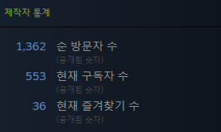

HTTP와 HTTPS
1. 프로토콜과 HTTP
1.1. 프로토콜
프 로토콜이란 개념이 왜 등장했는지 먼저 살펴보자. 두 대의 컴퓨터가 있다. 이 두 대의 컴퓨터는 필요한 자료들을 공유하고 싶어한다. 그래서 서로 통신을 통해서 자료들을 제공하기로 하였다. 이 때, 정의된 약속같은것이 없다고 생각해보자. 두 컴퓨터는 서로 정보를 주고 받는 과정에서, 어느 데이터가 요청에 대해서 보내온 데이터이고, 어느 데이터가 연결이 제대로 되어 있는지 체크하는 내용인지, 보낸 정보인지, 이런 것들을 판단하는 것은 어려운 일이다. 따라서, 컴퓨터 사이의 통신에 있어서 약속을 정하는데, 이 약속이 곧 프로토콜(Protocol)이다. MDN(Mozilla Developer Network)의 용어 사전에서 프로토콜의 정의를 찾으면 아래와 가다.
프로토콜은 컴퓨터 내부에서, 또는 컴퓨터 사이에서 데이터의 교환 방식을 정의하는 규칙 체계입니다. 기기간 통신은 교환되는 데이터의 형식에 대해 상호 합의를 요구합니다. 이런 형식을 정의하는 규칙의 집합을 프로토콜이라고 합니다.
-MDN 용어사전 프로토콜 항목-
그렇다면 프로토콜과 HTTP는 무슨 상관일까. HTTP(HyperText Transfer Protocol)는 프로토콜 중의 하나로, 대부분의 경우 HTML문서나 이미지 등을 받아오는데 사용되는 프로토콜이다.
참고문헌(Reference)
[1] "HTTP", 한국어 위키백과, Accessed on: 2022-09-11 0:30:40